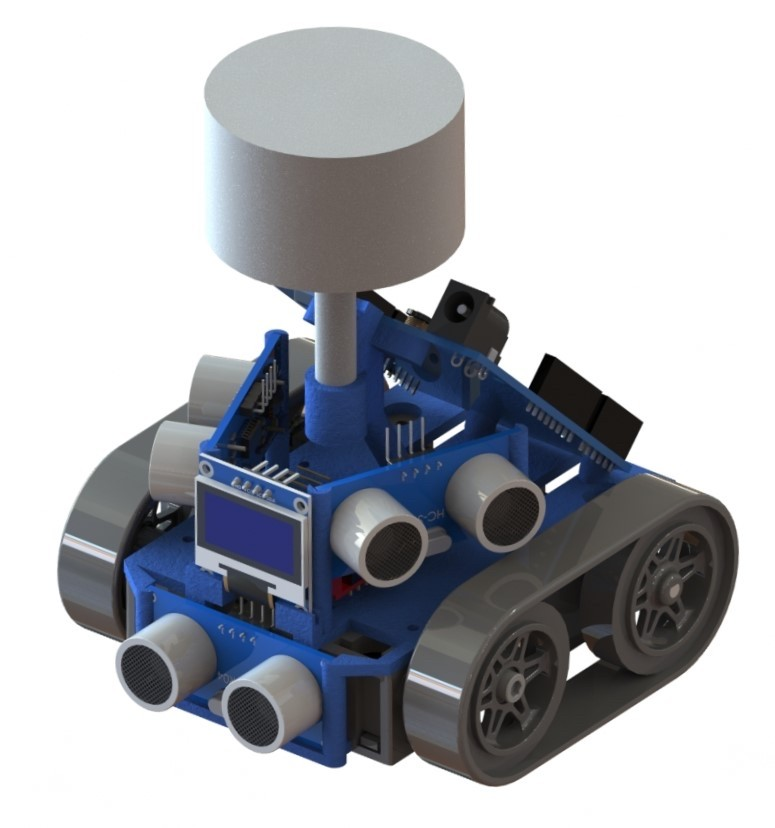
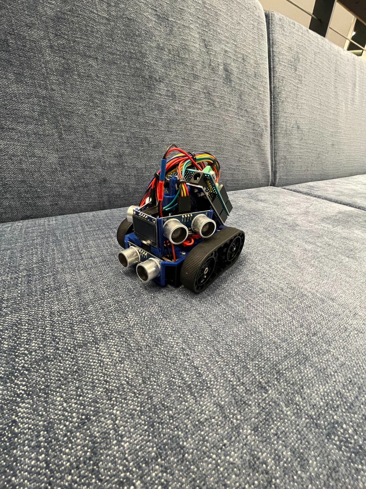

Autonomous LiDAR Mobile Robot
End-to-end autonomous navigation using LiDAR-based perception and localization
Overview
This project involved the design and implementation of a fully autonomous mobile robot capable of navigating unfamiliar environments and autonomously reaching multiple target locations. Autonomous navigation in unknown, obstacle-filled environments is a core challenge in mobile robotics, requiring robust perception, localization, and control.
To address this challenge, the system leveraged LiDAR and sonar sensors to perceive the surrounding environment, build spatial awareness, and enable safe, goal-directed motion. The project emphasized the integration of mechanical design, embedded electronics, and real-time software to deliver a reliable autonomous navigation platform.
Technical Approach
- Developed autonomous navigation logic using real-time sensor data communicated via MQTT
- Integrated LiDAR and sonar sensors for environment perception and obstacle avoidance
- Implemented an OLED screen for live state/progress updates
- Tuned localization, planning, and control parameters to achieve smooth and stable motion
- Validated system performance across multiple arena layouts with static obstacles and predefined targets
Visuals

Autonomous mobile robot rendered model.

Autonomous mobile robot picture.
Tools & Skills
Tools: C++, SolidWorks, MQTT
Skills: Autonomous navigation, sensor integration, control systems, algorithm development
My Role
I led the development of the navigation algorithms, performed control parameter tuning, and managed electrical system integration. I also contributed to mechanical design through CAD modeling and conducted experimental testing to validate reliable autonomous operation across varied environments.